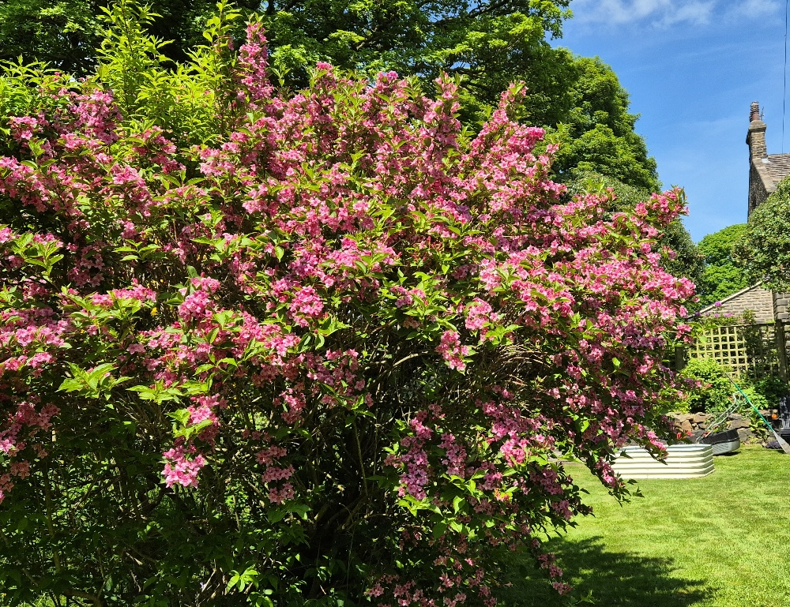
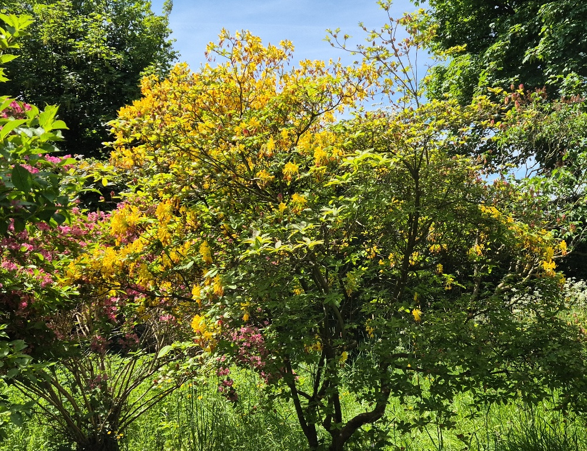
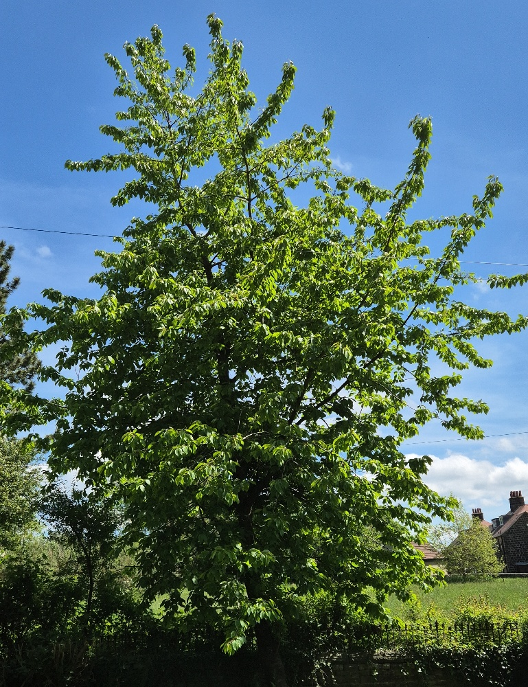
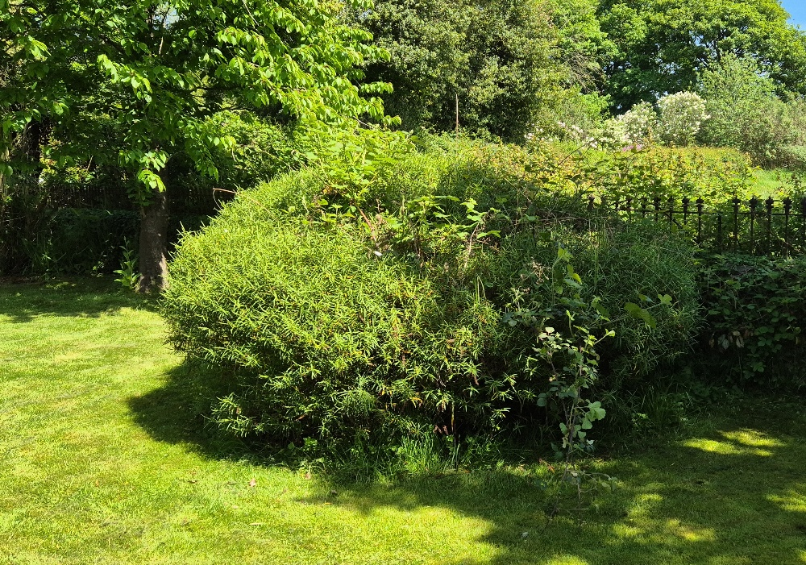
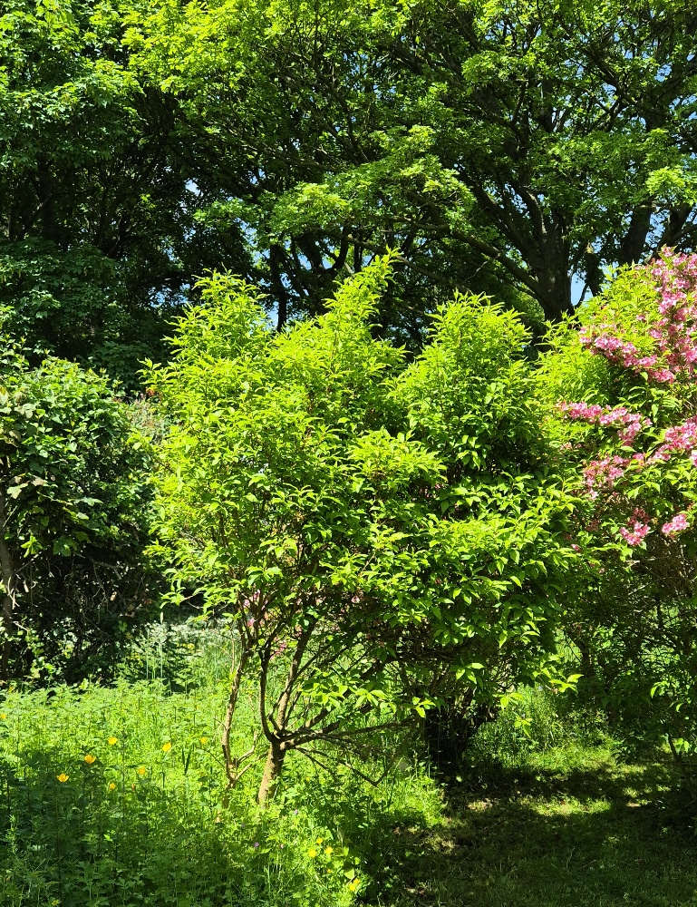
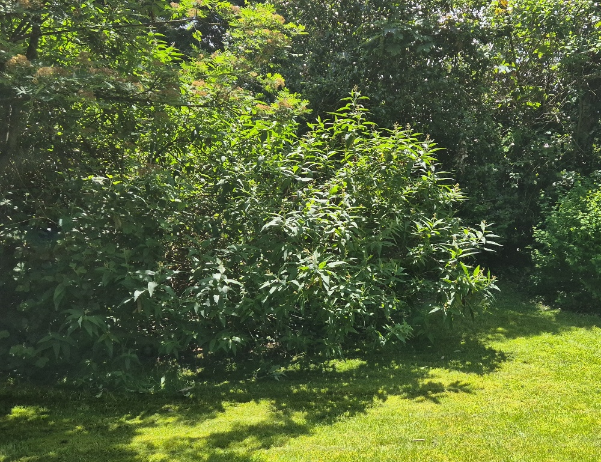
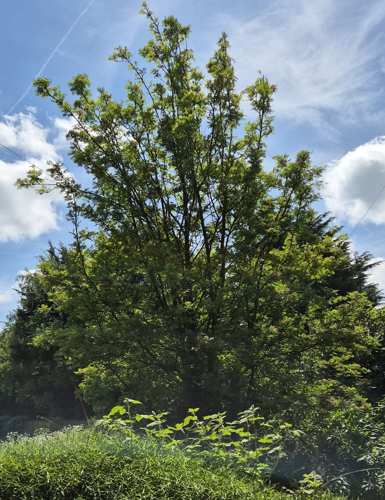

The lawn at the bottom of the garden
Weigela

Pruning Weigela
- When to Prune: The best time to prune is immediately after it finishes flowering, typically in early to mid-summer (around June or July). Weigela blooms on the previous year's growth, so pruning right after flowering gives the plant enough time to develop new shoots for next year's blooms.
- How to Prune:
- General Trimming: Cut the stems that have just flowered back by about a third, making the cut just above a healthy leaf node or new shoot.
- Tidying Up: Remove any dead, damaged, or crossing branches to improve the shrub's shape and allow better air circulation.
- Rejuvenation (Every few years): For mature plants, cut out up to one-third of the oldest, thickest, and most woody stems right down to the base to encourage new growth.
Deciduous Azalea (Yellow Azalea / Rhododendron luteum)

Overview
A striking, hardy deciduous shrub famous for its masses of highly fragrant, bright yellow, funnel-shaped flowers. Unlike evergreen azaleas, it drops its leaves in the winter, but it puts on a spectacular autumnal display before doing so.
Key Characteristics
- Blooms: Produces clusters of vibrant yellow, heavily scented flowers in late spring to early summer (typically May to June, settling in perfectly with the West Yorkshire seasons).
- Foliage: Bright green, oblong leaves in the spring and summer that turn brilliant shades of orange, red, and purple in the autumn.
- Growing Conditions: Thrives in acidic, moist, but well-draining soil. It does best in dappled shade or partial sun.
Pruning & Maintenance
- When to Prune: Immediately after flowering (usually late spring to early summer, around late June). Because these azaleas bloom on old wood, pruning too late in the season will accidentally remove next year's flower buds.
- How to Prune: Generally low-maintenance. Focus primarily on removing dead, damaged, or diseased wood.
- Tidying: Thin out crossing stems to improve air circulation through the center of the plant.
- Rejuvenation: If the shrub becomes too dense or overgrown over time, you can cut out a few of the oldest, thickest stems right down to the ground.
Ornamental Cherry Tree (Prunus)

Overview
A classic deciduous garden tree celebrated for its spectacular spring blossom display. Beyond the flowers, it features beautiful foliage that often turns vibrant colors in autumn, and distinctive bark marked with horizontal bands called lenticels.
Key Characteristics
- Foliage: Simple, alternately arranged green leaves with prominently serrated (toothed) edges.
- Bark: Highly characteristic smooth bark featuring prominent horizontal lines or breathing pores (lenticels), which are clearly visible on the trunk.
- Blooms: Produces prolific clusters of white or pink flowers in early to mid-spring.
Pruning & Maintenance
- When to Prune: Pruning must strictly be done in mid-summer (July to August). Pruning cherry trees during the wet winter or early spring exposes the fresh cuts to airborne fungal infections like silver leaf disease and bacterial canker.
- How to Prune: Cherry trees generally resent heavy pruning. Keep it to an absolute minimum, focusing only on removing dead, diseased, or damaged branches.
- Shaping: If necessary, lightly thin out any crossing or rubbing branches to maintain a balanced, open canopy that allows good air circulation.
Hebe (Shrubby Veronica)

Overview
A highly popular, versatile evergreen shrub that provides excellent year-round structural interest in the garden. This particular one appears to be a narrow-leaved variety, known for forming a dense, rounded dome of attractive foliage.
Key Characteristics
- Foliage: Narrow, lance-shaped green leaves that are arranged in neat, opposite pairs along the stems (a classic identifier for Hebes).
- Blooms: Depending on the exact variety, it will likely produce slender spikes (racemes) of small white, pink, or purple flowers later in the summer.
- Growth Habit: Forms a naturally tidy, bushy, and rounded evergreen mound.
Pruning & Maintenance
- When to Prune: Late winter to early spring (around April) just before the new growing season starts. You can also deadhead the plant lightly right after it finishes flowering in late summer to autumn.
- How to Prune: Hebes generally need very little pruning. You can give it a light trim over the top to maintain its neat, rounded shape and encourage bushy growth.
- Caution: Avoid cutting back hard into the old, brown, leafless wood (visible deep in the center of the shrub), as Hebes often struggle to regrow from old wood. Stick to trimming the softer, leafy green growth.
Plum Tree (Prunus domestica)

Overview
A deciduous fruit tree commonly found in UK gardens, offering spring blossom and, depending on the variety, a harvest of edible fruit in late summer or autumn. The mottled, somewhat textured bark is a typical feature as these trees mature.
Key Characteristics
- Foliage: Simple, bright green leaves arranged alternately along the stems, featuring finely serrated (toothed) edges and a pointed tip.
- Bark: The bark often appears mottled with patches of green, grey, and brown, featuring small breathing pores known as lenticels.
- Blooms: Produces clusters of white flowers in early spring, before or just as the leaves begin to emerge.
Pruning & Maintenance
- When to Prune: Like the ornamental cherry, plum trees belong to the Prunus family and must be pruned in mid-summer (around July or August). Avoid winter pruning to prevent airborne fungal infections like silver leaf disease.
- How to Prune: Remove any dead, diseased, or crossing branches to maintain an open center (often styled as a 'goblet' shape). This open structure allows light and air to circulate, which is vital for developing healthy fruit.
- Harvesting: Depending on the specific cultivar and the local Yorkshire summer weather, plums are typically ready to harvest between August and September.
Orange Ball Tree (Buddleja globosa)

Overview
A striking, semi-evergreen to deciduous shrub that stands out from the standard butterfly bush. Instead of long flower spikes, it produces highly distinctive, perfectly round, bright orange flower heads that are a massive draw for local bees and butterflies.
Key Characteristics
- Foliage: Long, narrowly ovate leaves that grow in opposite pairs. They have a very distinct, deeply veined (rugose) surface that almost looks wrinkled.
- Bark: As the shrub matures, the older stems develop a rugged, peeling, and somewhat fibrous bark.
- Blooms: Currently showing its tightly packed spherical buds, these will shortly burst into vibrant orange, honey-scented floral "balls", perfectly timed for late May into June.
Pruning & Maintenance
- When to Prune: Crucial difference: Unlike the common Buddleja davidii (which is pruned hard in early spring), this species blooms on the previous year's growth. You must prune it immediately after it finishes flowering in mid-to-late summer. Pruning it in spring will cut off all the buds!
- How to Prune: It generally requires minimal pruning. Simply trim back the shoots that have just flowered to a healthy pair of leaves or a strong side shoot to maintain its shape.
- Rejuvenation: If the shrub becomes too large or woody, cut out one or two of the oldest, thickest stems right down to the ground after flowering to encourage fresh new growth from the base.
Rowan Tree (Mountain Ash / Sorbus aucuparia)

Overview
A beautiful native deciduous tree that is a quintessential part of the Yorkshire landscape. It is well-loved for its delicate, fern-like foliage, clusters of creamy-white spring flowers, and the brilliant display of bright red berries it produces in the autumn. (Note: There is also a lovely purple Lilac blooming right next to it in one of the reference photos!)
Key Characteristics
- Foliage: Pinnate (feather-like) leaves consisting of multiple pairs of narrowly oblong, serrated leaflets along a central stem.
- Blooms & Berries: Currently showing the fading remnants of its flat-topped clusters of spring flowers, which will soon develop into dense bunches of vibrant red or orange berries that local birds love.
- Bark: Smooth and greyish when young, developing slight fissures and horizontal lenticels (pores) as it matures, often hosting charming patches of moss.
Pruning & Maintenance
- When to Prune: Late autumn to winter (when the tree is fully dormant). Pruning in spring or summer can cause the tree to "bleed" sap and leaves it susceptible to diseases.
- How to Prune: Rowans naturally form a well-shaped canopy and generally require very little pruning. Stick to removing only dead, damaged, or crossing branches to maintain a healthy structure.
- General Care: They are extremely hardy trees and thrive in a variety of soils, needing practically no intervention once established.